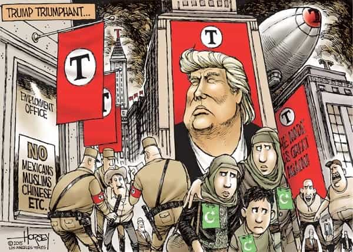

Daryush "Roosh" Valizadeh created ROK in October 2012. You can visit his blog at RooshV.com or follow him on Twitter and Facebook.


The word “fascism” has come out of nowhere to describe Donald Trump, as shown by search engine frequency that is ten times higher than what it was in 2014. After researching what fascism really means, I’ve concluded that it is being used as a weapon to shut down dissident thought after previous attack labels like “sexist” and “racist” lost their power.
The problem with the word fascism is that it never had a clear definition. Every single resource I found that tried to define fascism has used a different set of standards and rules, meaning that no objective definition exists. It describes nothing and everything at the same time, meaning that it has no function in discourse but that of a rhetorical weapon, simply because of the World War 2 Axis Power connotation that is associated with it.
Let’s start with the simplest definition, offered by historian R.J.B. Bosworth.
…it might be argued that the quest for definition of fascism has become absurdly laboured. Why opt for a long list of factors or paragraph of rococo ornateness when Mussolini, on a number of occasions, informed people he regarded as converted to his cause that Fascism was a simple matter? All that was needed was a single party, a dopolavoro [“after work”, a social leisure time organization], and, he did not have to add, a Duce (with a Bocchini to repress dissent) and a will to exclude the foe (somehow defined). To be still more succinct, as Mussolini told Franco in October 1936, what the Spaniard should aim at was a regime that was simultaneously ‘authoritarian’, ‘social’, and ‘popular’. That amalgam, the Duce advised, was the basis of universal fascism.”
Donald Trump does not advocate for a single party, does not have a social leisure organization, and initially tried to reach across the aisle to include the foe (Democratic party) in advancing his pro-America agenda. From the mouth of Mussolini himself, the progenitor of fascism, we can easily conclude that Trump is not one.
This would seem like an open-and-shut case, but instead of taking Mussolini’s word for it, historians insist on endlessly analyzing the qualities and nature of his regime to produce an expanded definition of fascism. This is where we get into trouble, because their analysis becomes more subjective and mired in problems of definition.
All three authors agree that statism, nationalism, unity, authoritarianism, and vigor are essential elements of fascism.
Immediately you may be struck by how terms like “unity” and “vigor” are vague descriptors, especially the latter, which can be used to merely describe an alpha male. I’ve also seen the word “vitality” being used to describe fascism, as if the opposite is more preferable. These authors will also have different definitions of statism, nationalism, and authoritarianism, and those definitions will shift over time, becoming vague enough that they can be used as a means of attack on nearly anyone. “Fascism” becomes a system that is defined upon other systems, all of which have definitions that can be changed at a moment’s notice by any competent propaganda machine to make fascist what previously was not fascist.
For sake of historical accuracy, it should be noted that Jews were disproportionately represented in Italy’s fascist regime, just like they were in communism and Cultural Marxism.
[The authors] also note that the role of anti-Semitism in the rise of fascist movements was minor. In the Italian case, it played no role at all in the early days. Jews, indeed, were disproportionately likely to be party members: it is estimated that in the early 30’s, 25% of adult Jews were Fascist party members, compared to about 10% for the entire adult population.
George Orwell, author of Animal Farm and 1984, wrote an essay that points out the bendability of fascism.
Catholics: Outside its own ranks, the Catholic Church is almost universally regarded as pro-Fascist, both objectively and subjectively.
War resisters: Pacifists and others who are anti-war are frequently accused not only of making things easier for the Axis, but of becoming tinged with pro-Fascist feeling.
Nationalists: Nationalism is universally regarded as inherently Fascist, but this is held only to apply to such national movements as the speaker happens to disapprove of. Arab nationalism, Polish nationalism, Finnish nationalism, the Indian Congress Party, the Muslim League, Zionism, and the I.R.A. are all described as Fascist but not by the same people.
Even in 1944, in the fresh aftermath of Mussolini, the term was already being abused.
It will be seen that, as used, the word ‘Fascism’ is almost entirely meaningless. In conversation, of course, it is used even more wildly than in print. I have heard it applied to farmers, shopkeepers, Social Credit, corporal punishment, fox-hunting, bull-fighting, the 1922 Committee, the 1941 Committee, Kipling, Gandhi, Chiang Kai-Shek, homosexuality, Priestley’s broadcasts, Youth Hostels, astrology, women, dogs and I do not know what else.
He concludes his piece by stating that “fascist” is merely an insult to mean “bully.”
…even the people who recklessly fling the word ‘Fascist’ in every direction attach at any rate an emotional significance to it. By ‘Fascism’ they mean, roughly speaking, something cruel, unscrupulous, arrogant, obscurantist, anti-liberal and anti-working-class. Except for the relatively small number of Fascist sympathizers, almost any English person would accept ‘bully’ as a synonym for ‘Fascist’. That is about as near to a definition as this much-abused word has come.
Even the word “bully” has had its definition change over the years, and has now come to mean anyone who is strong, capable, and mighty. In other words, an alpha male. In a society that actually believes masculinity is “toxic” and any man who pursues sex with women as a likely “rapist,” we’ve endured a full decade of relentless propaganda attacking anything that is male, meaning even a man of average assertiveness becomes a “bully.” Within ten years, any man who is not a cuckold will also be called a bully. Real bullies who prey on the weak do exist, and that should be discouraged, but the mainstream establishment has used the word bully to define anyone and anything with an essential masculine quality.
From the above analysis, we can now create a definition of fascism for modern usage: anyone to the right of me who possesses strength. If your political views are to the right of someone, and you believe that strength in leadership is necessary, and the year is current, you will be called a fascist. If you are a “conservative” who is fearful of strength because it is literally Hitler, you will not be called a fascist. If you are on the far left but use strength to assert your position, like militant Black Lives Matter groups, you will not be called a fascist. If you are a moderate homosexual Jew like Milo, who has leftist views but is still right of where most leftists reside, you will be called a fascist, and your supporters will be beaten with pipes. The term is therefore relative and emotional—it’s a feeling that someone who is more conservative than you believes in strength to aid in upholding societal stability and cultural values.

Since the nebulous textbook definition of fascism uses various other systems to define it, mostly for the use of labeling by historians to write books that justify their positions and salaries, anyone who genuinely fears fascism should instead levy specific accusations of wrongdoing if they intend to carry on an intellectual debate. For example, what specific feature of Trump’s nationalism is wrong on logical terms? What specific authoritarian act that does not follow due process has he encouraged?
I do not expect the fascist labelers to drill down to such a level of logic, so we must endure their endless use of the term, mostly because their previous labels of sexist, racist, and rapist have lost steam and are no longer effective at shutting down conversations and ideas that they view as dangerous to their globalist platform. Behold the era of the fascist bot, who utters a term merely out of emotion for a need to assert power, and nothing more.
This article was originally published on Roosh V.
Read More: What Donald Trump’s Victory Means For Men